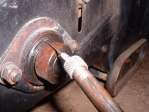

After a ride, one wheel hub or brake drum is much hotter than the other. A little warmth is normal where brakes were used. A hub too hot to keep your hand on, with little braking, means friction where there should be none. The two usual causes are a brake that drags and a bearing that has lost its grease.
Is it safe to ride?
No. A seized brake can lock the wheel, and a failed bearing can let the wheel tilt or stop. Let the wheel cool and fix the cause first.
Quick checks first
- Wait until the wheel is cool before touching it.
- Spin the wheel by hand with the bike on a stand. It should turn freely and run on for a while.
- Pull the brake lever or press the pedal and release. The wheel should be free again.
- Look for blue or brown heat marks on the axle or disc.
Diagnose it step by step
1Does the wheel spin freely with the bike on the stand and the brake released?
- No, it drags or stops quickly: go to step 2.
- Yes: go to step 3.
2Is the wheel a drum brake or a disc brake?
- Drum: the cable or rod may be too tight, the pedal or lever may not return, or the cam may be stiff. Follow Adjust a drum brake and, for a twin leading shoe brake, Adjust a twin leading shoe drum brake.
- Disc: a caliper that sticks or a master cylinder that does not release holds the pads on the disc. Go to Check for brake drag.
- If drag stays after this, see Brake drags and the wheel does not spin freely.
3Does the wheel rock on its axle or feel rough when you turn it?
- Yes: a bearing is worn or dry. Go to Check wheel bearings.
- No: go to step 4.
4Was the wheel recently refitted, and was the drum brake centred when the axle was tightened?
- It may have been tightened with the shoes off-centre. Loosen the axle, apply the brake and tighten it again. See Centre the brake shoes when refitting a drum wheel.
- No recent work: go to step 5.
5Is the hub still too hot after the brake is clear and the bearings feel smooth?
- Replace the bearings anyway if there is any doubt. A bearing that has overheated is ruined even if it feels smooth. See Replace wheel bearings.
- Heat discolouration on the axle also means bearing and axle must be replaced.
If you keep riding on a hot, dry bearing, it will fail. If a long trip is planned and you cannot remember the last bearing change, replace them first.
Causes, most likely first
| Cause | How to confirm | Fix |
|---|---|---|
| Drum brake adjusted too tight | Wheel drags, drum hot with little braking | Adjust a drum brake |
| Brake shoes off-centre in the drum | Started after the wheel was refitted | Centre the brake shoes when refitting a drum wheel |
| Sticking caliper or pads | Disc hot, pads drag | Check for brake drag |
| Dry or worn bearing | Wheel rough or loose, brake is clear | Replace wheel bearings |
| Overheated bearing | Axle discoloured, hub very hot | Replace bearings and axle |